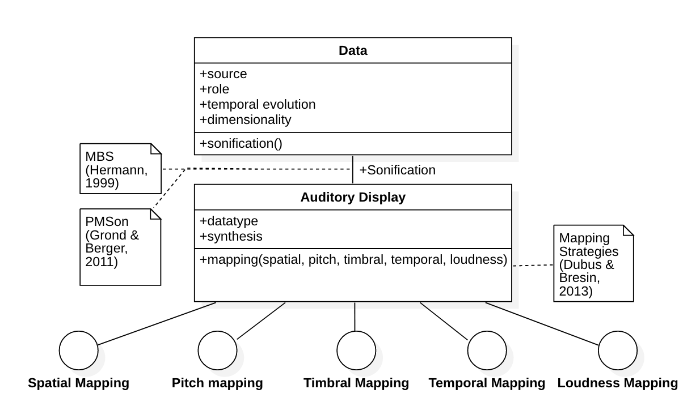
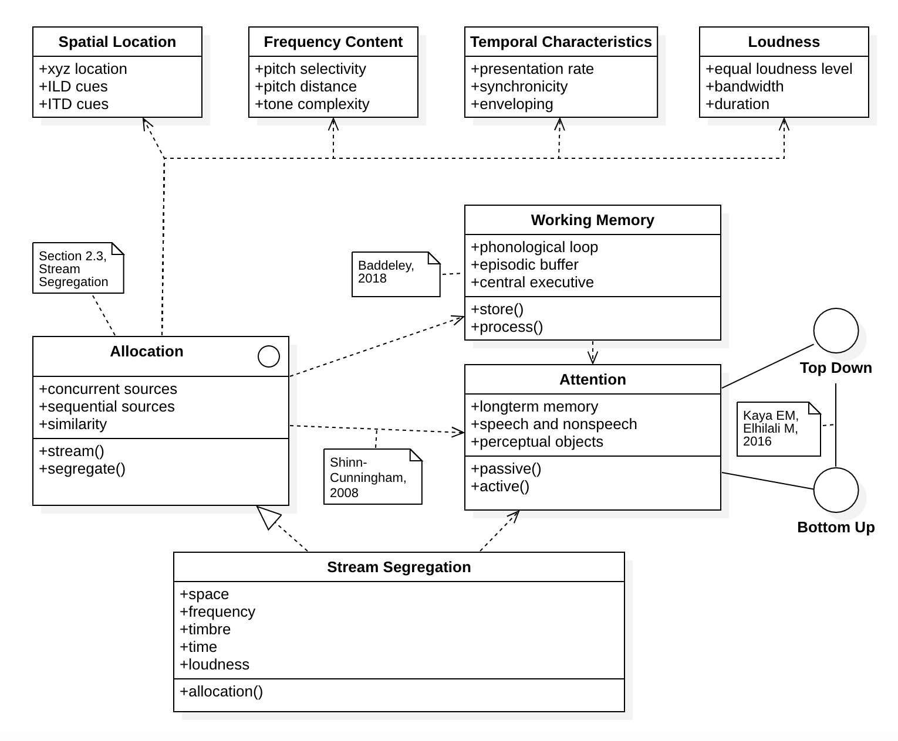
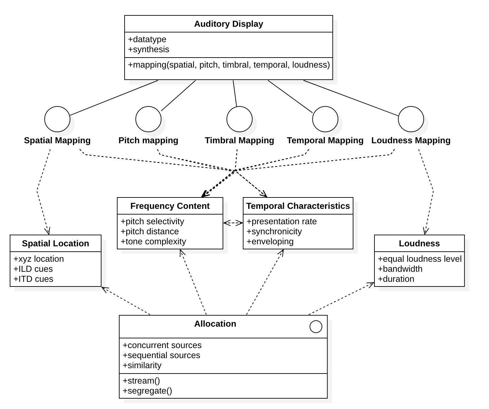

1 / 4

This is a generic visual model of sonification.
2 / 4

This is a basic visual model of Stream Segregation (SS). Note the key determinants of allocation: space; frequency; time; and loudness.
3 / 4

This is a visual breakdown of how sonification mappings are dependant on the determinants of SS.
4 / 4
Continue
Tell us about your sonification application for information most relevant to your design.